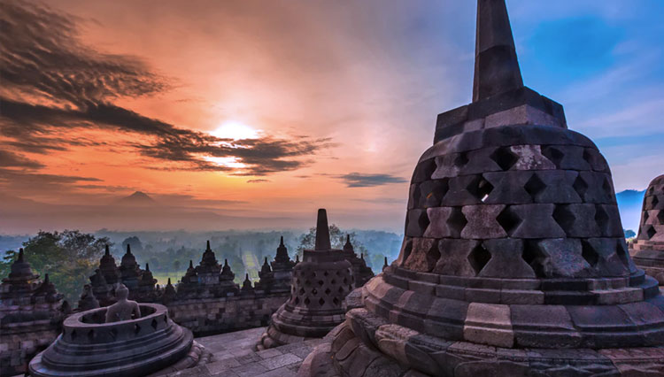
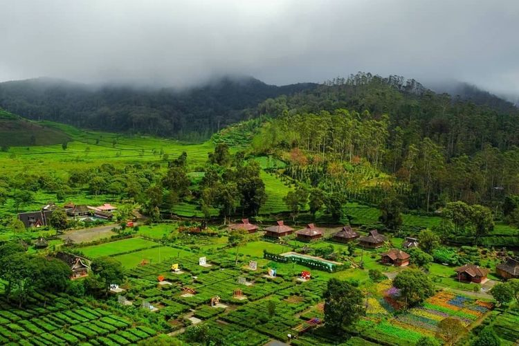
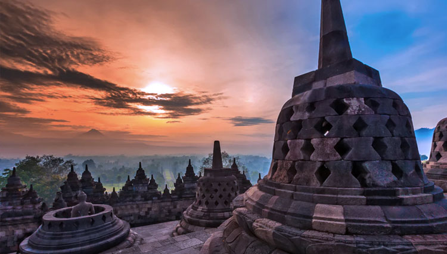
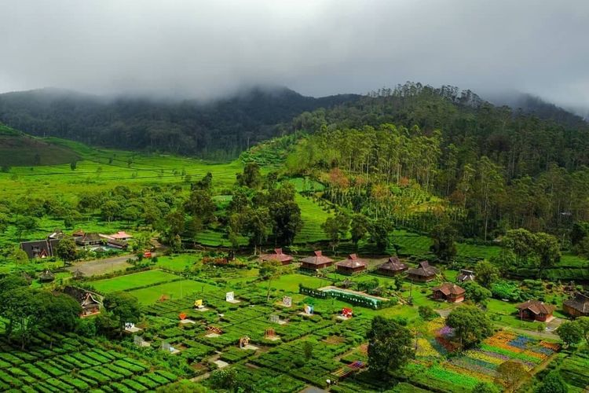
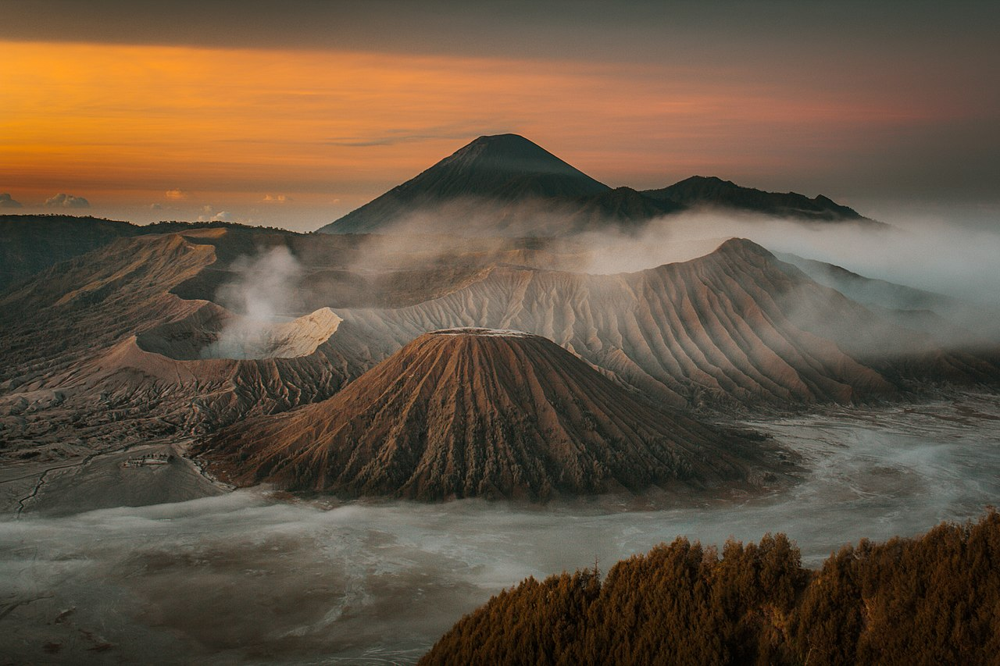
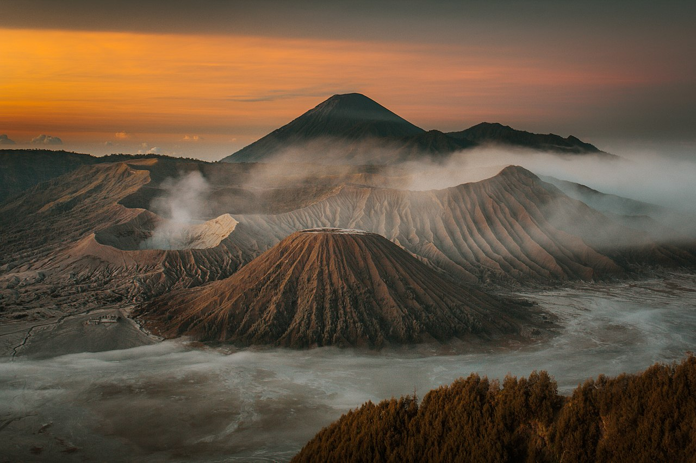
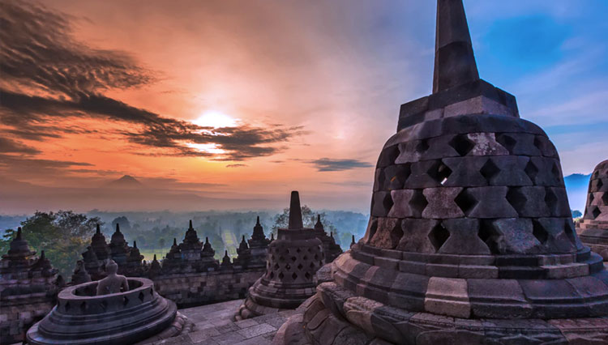
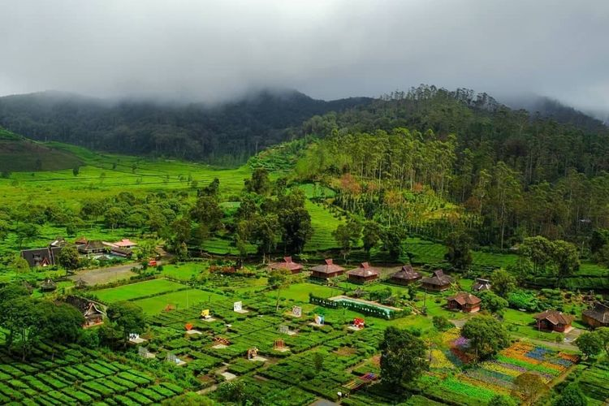
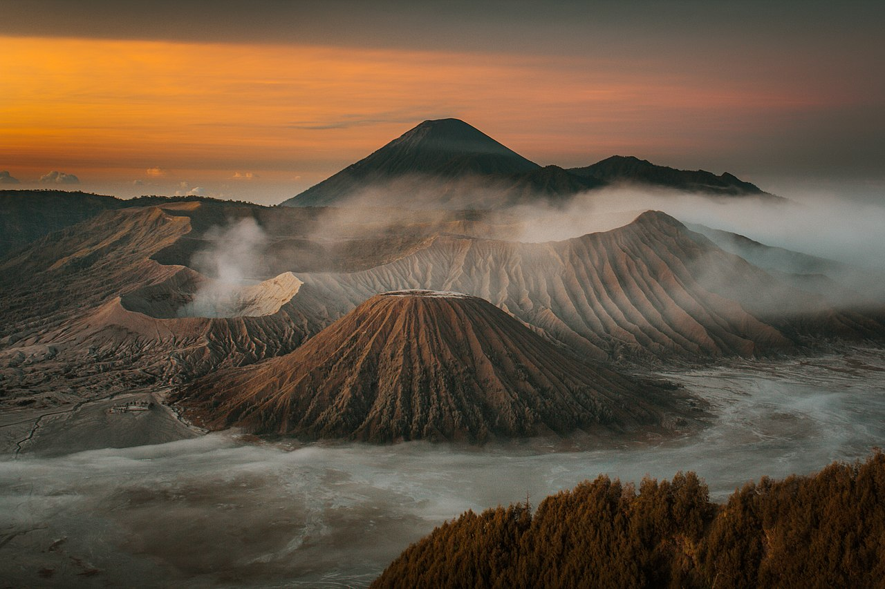

Foto Destinasi Liburan Favorit

 



 

Hallo, ini adalah website yang menampilkan daftar destinasi liburan favorit saya. tempat-tempat ini dikenal dengan keindahan alamnya yang pasti sangat memanjakan mata banget deh. tempat ini juga bisa dijadikan objek fotografi panorama yang indah buat kalian yang konten kreator.



| Nama Destinasi | Lokasi | Harga Tiket Masuk (HTM) | Deskripsi |
|---|---|---|---|
| Kawah Putih | Bandung, Jawa Barat | 26.000 | Kawah putih adalah salah satu destinasi yang terletak di Kabupaten Bandung. kawah putih juga cocok dijadikan tempat untuk healing buat kalian yang udah burnout hahaha:v. |
| Jalan Braga | Bandung, Jawa Barat | Gratis | Jalan Braga adalah salah satu destinasi yang terletak di kota Bandung. tempat ini juga dikenal dengan sejarahnya yang cukup panjang. selain itu destinasi ini juga sangat instagramable banget, cocok buat kalian yang suka bikin postingan yang aesthetic. |
| Candi Borobudur | Magelang, Jawa Tengah | 4.000-15.000 | Candi Borobudur adalah salah satu destinasi yang terletak di Magelang, Jawa Tengah. tempat ini merupakan salah satu dari keajaiban dunia versi UNESCO. tempat ini juga sangat ikonik di Indonesia. |
| Gunung Mas | Bogor, Jawa Barat | 15.000 | Gunung Mas adalah salah satu destinasi yang terletak di Bogor, Jawa Barat. tempat ini memiliki panorama alam yang indah dengan dipadukan oleh kebun teh. tempat ini cocok buat kalian yang mau cari view indah buat foto-foto. |
| Kawah Ijen | Bondowoso dan Banyuwangi, Jawa Timur | 5.000-7.500 | Kawah Ijen merupakan destinasi wisata yang terletak di perbatasan Kabupaten Bondowoso dan Banyuwangi. tempat ini memiliki spot foto yang sangat indah pada malam hari. dijamin buat kalian para fotografer gak bakal nyesel dateng kesini |
| Bromo Tengger Semeru | Probolinggo, Pasuruan, Lumajang, Malang, Jawa Timur | 29.000-34.000 | Bromo Tengger Semeru adalah destinasi wisata yang terletak di 4 Kabupaten di Jawa Timur Yaitu Probolinggo, Pasuruan, Lumajang, dan Malang. tempat ini adalah titik tertinggi di pulau Jawa dengan ketinggian mencapai 3676 mdpl. tempat ini juga pernah dijadikan film yaitu 5cm. bagi kamu yang suka hiking ini saatnya buktikan dirimu di titik tertinggi pulau Jawa. |
{kind=link}